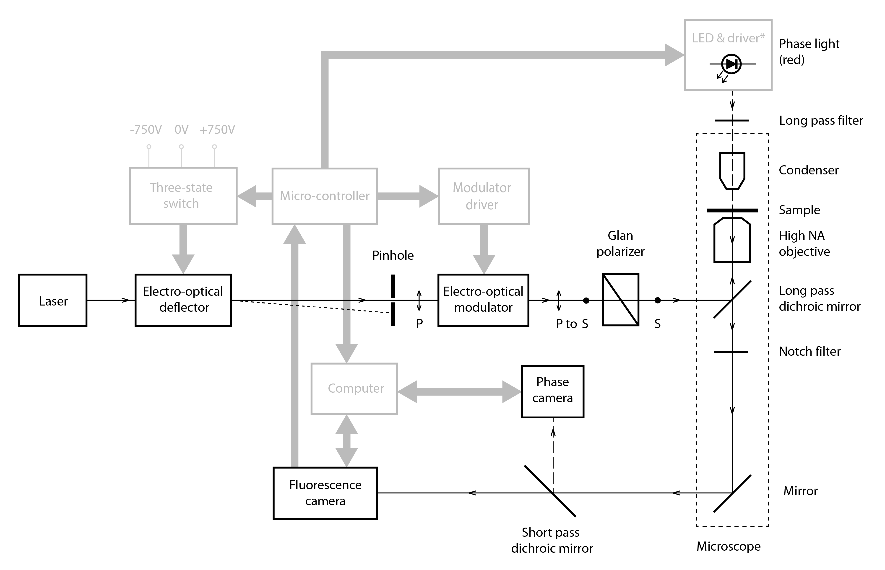
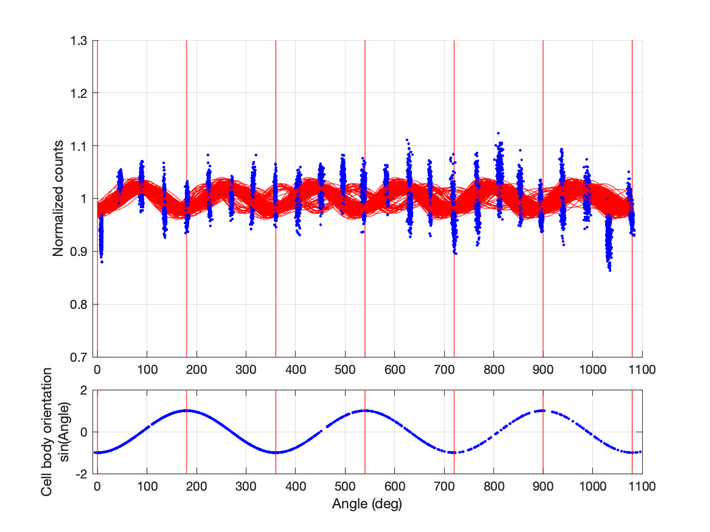

https://bit.ly/SamuelChalkTalk2024
The bacterial flagellar motor
Aravi Samuel, 2023

Howard Berg (1934-2021)
Escherichia coli
Biased random walks

Wild-type E. coli cell executing a random walk in a homogeneous medium.
Planar projections of a 3D track
Flagella rotate


CCW rotation → run
CW rotation → tumble
"If bacterial flagella rotate, the structures at the base of the flagellum
deserve more attention than they have received thus far."
-Howard Berg
Part 1: Motor mechanisms
The bacterial flagellar motor

Fluctuation analysis of motor speed

Small speed fluctuations → many steps
\[ \left< \theta \right> = \phi \times \left< n \right> \]
\[ \left< \theta^2 \right> - \left< \theta \right>^2 = \phi^2 \times \left( \left< n^2 \right> - \left< n \right> ^2 \right) \]
\[ \left< n^2 \right> - \left< n \right> ^2 = \left< n \right> \]
\[ \therefore \phi=\frac{\left< \theta^2 \right> - \left< \theta \right> ^2}{\left< \theta \right>} \]
Cryo-electron microscopy

Deme et al 2020, Tan et al 2021
Cryo-electron microscopy


Deme et al 2020
Santiveri et al 2020
ATP synthase

A model for torque generation and switching

Polarized photobleaching → polarization-dependent fluorescence

Hosu et al 2017
MotB dimer stably fused to FP
MotA pentamer stably fused to FP
All MotB fluoresce
Polarized photobleaching
Cell rotates

Unbleached MotB fluoresces
Reaches maximum at 90°

Cell rotates
Cell rotates

Reaches minimum at 180°
Recovers...
And so on...

And so on...
And so on...

And so on...
And so on...
And so on...

And so on...
And so on...
And so on...

And so on...

And so on...

And so on...
And so on...
And so on...

And so on...

And so on...

Numerical simulation
Experimental setup
MotB rotation is locked to the cell
Two MotB fluorescence cycles for every rotation cycle
Does MotA step?

MotA stepping

MotA stepping

MotA stepping
MotA stepping
MotA stepping

MotA stepping
MotA rotating
MotA rotating
MotA rotating
MotA rotating

MotA rotating
MotA rotating

Gear ratio 3:1
MotA spins much faster than the cell
Full MotA fluorescence cycle every 18 ° of cell rotation
"Consider the lilies of the field, how they grow; they toil not, neither do they spin."
Matthew 6:28
"Consider the lilies of the field, how they grow; they toil not, neither do they spin."
Matthew 6:28
"Consider the MotA/MotB subunits of the bacterial flagellar motor;
we toiled, they spin."
Gabriel, Alina, and Aravi
Part 2: Signal transduction
Flagella rotate
CCW rotation → run
CW rotation → tumble
"If bacterial flagella rotate, the structures at the base of the flagellum
deserve more attention than they have received thus far."
Berg and Brown, 1972
The impulse response

Change in CCW bias in response to attractant puff
Small change in 'fraction of bound receptor'
(0.0042)
↓
Large change in bias
(0.23)
Perfect adaptation
and
High gain
Block, Segall, and Berg, 1982
Signal transduction

increase [cheY-P] → increase CW bias
decrease [cheY-P] → decrease CW bias
Signal transduction observed

Sourjik and Berg, 2002
An ultrasensitive motor

Cluzel et al. 2000
An adaptive motor

Yuan et al. 2012
An optogenetic inspiration

Boyden, 2012
Optogenetic control of bias

Start with high bias
Optogenetic control of bias

Flash → End with low bias
Optogenetic control of bias

Start with low bias
Optogenetic control of bias

Flash → End with high bias
Optogenetic protein uncaging

Photoexcitation of Avena sativa phototropin 1 induces
displacement and unfolding of J$\alpha$ domain
Strickland et al 2010
Caged CheY

Inactive cheY-P pool caged by optogenetic protein
Caged CheY

Flash → Uncaged cheY-P → CW bias
Blue light → uncaging → active CheY
Dark → re-caging → inactive CheY
A new impulse response measurement

Components of the impulse response

Acknowledgments

Alina Vrabioiu

Dean's Competitive Fund, Harvard
Chris Stubbs, Jeff Lichtman

Gabriel Hosu
David Zimmerman
Stan Lazopulo
Helena Casademunt
Core Park
Ishaan Chandok
Rafael Jacobsen
Sophia Kim